File: 000270.gt.txt (if the image is defective, simply delete all Arabic text and the line will be excluded)
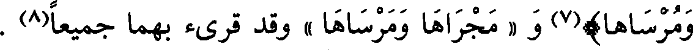
ومرساها)(7)و « ومجراها ومرساها » وقد قرئ بهما جميعا(8) .
File: 000271.gt.txt (if the image is defective, simply delete all Arabic text and the line will be excluded)
باب فعال وفعيل
File: 000272.gt.txt (if the image is defective, simply delete all Arabic text and the line will be excluded)
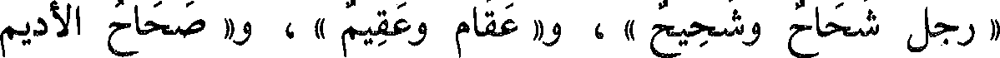
« رجل شحاح وشحيح » ، و« عقام وعقيم » ، و« صحاح الأديم
File: 000273.gt.txt (if the image is defective, simply delete all Arabic text and the line will be excluded)
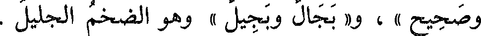
وصحيح » ، و« بجال وبجيل » وهو الضخم الجليل .
File: 000274.gt.txt (if the image is defective, simply delete all Arabic text and the line will be excluded)
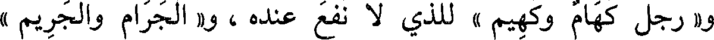
و« رجل كهام وكهيم » للذي لا نفع عنده ، و« الجرام والجريم »
File: 000275.gt.txt (if the image is defective, simply delete all Arabic text and the line will be excluded)
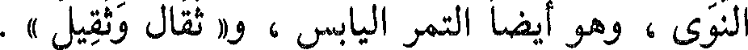
النوى ، وهو أيضا التمر اليابس ، و« ثقال وثقيل » .
File: 000276.gt.txt (if the image is defective, simply delete all Arabic text and the line will be excluded)
باب فعال وفعيل
File: 000277.gt.txt (if the image is defective, simply delete all Arabic text and the line will be excluded)
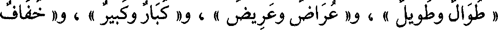
« طويل وطوال » ، و« عريض وعراض » ، و« كبير وكبار » ، و« خفيف
File: 000278.gt.txt (if the image is defective, simply delete all Arabic text and the line will be excluded)
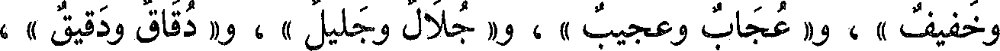
وخفاف » ، و« عجيب وعجاب » ، و« جليل وجلال » ، و« دقيق ودقاق » ،
File: 000279.gt.txt (if the image is defective, simply delete all Arabic text and the line will be excluded)
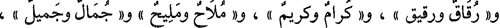
و« رقيق ورقاق » ، و« كريم وكرام » ، و« مليح وملاح » و« جميل وجمال » ،
File: 000280.gt.txt (if the image is defective, simply delete all Arabic text and the line will be excluded)
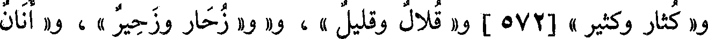
File: 000281.gt.txt (if the image is defective, simply delete all Arabic text and the line will be excluded)
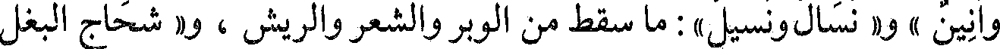
وأنان » و« نسيل ونسال » ماسقط من الشعر والوبر والريش، و «» شحيج البغل
File: 000282.gt.txt (if the image is defective, simply delete all Arabic text and the line will be excluded)
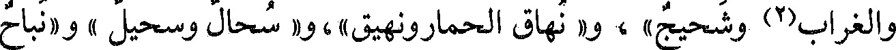
File: 000283.gt.txt (if the image is defective, simply delete all Arabic text and the line will be excluded)
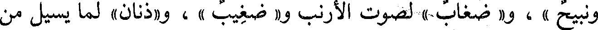
ونبيح » ، و« وضغاب » لصوت الأرنب و« ضغيب » ، و«ذنان» لما يسيل من
File: 000284.gt.txt (if the image is defective, simply delete all Arabic text and the line will be excluded)
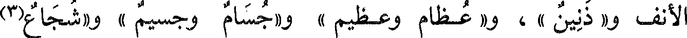
File: 000285.gt.txt (if the image is defective, simply delete all Arabic text and the line will be excluded)
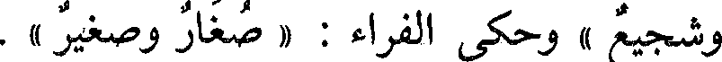
File: 000286.gt.txt (if the image is defective, simply delete all Arabic text and the line will be excluded)
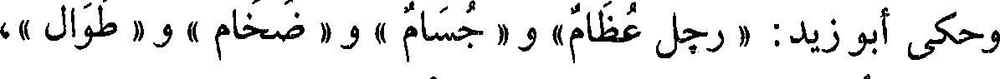
وحكى أبو زيد: « رجل عظام » و« جسام » و« ضخام» و« طوال »،
File: 000287.gt.txt (if the image is defective, simply delete all Arabic text and the line will be excluded)
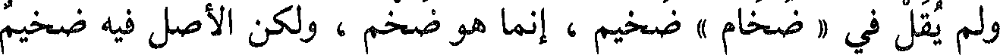
ولم يقل في « ضخام » ضخيم ، إنما هو ضخم ، ولكن الأصل فيه ضخيم
File: 000288.gt.txt (if the image is defective, simply delete all Arabic text and the line will be excluded)
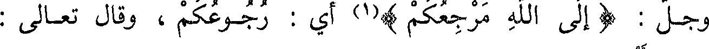
وجل : (إلى الله مرجعكم)(1) أي : رجوعكم، وقال تعالى :
File: 000289.gt.txt (if the image is defective, simply delete all Arabic text and the line will be excluded)
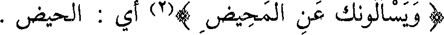
(ويسألونك عن المحيض )(2) أي : الحيض .
File: 000290.gt.txt (if the image is defective, simply delete all Arabic text and the line will be excluded)
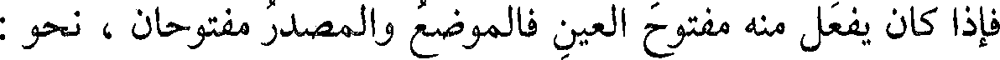
فإذا كان يفعل منه مفتوح العين فالموضع والمصدر مفتوحان ، نحو :
File: 000291.gt.txt (if the image is defective, simply delete all Arabic text and the line will be excluded)
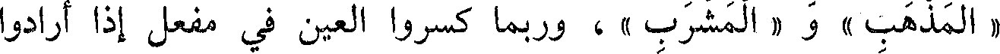
« المذهب » و « المشرب » ، وربما كسروا العين في مفعل إذا أرادوا
File: 000292.gt.txt (if the image is defective, simply delete all Arabic text and the line will be excluded)
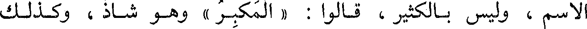
الاسم ، وليس بالكثير ، قالوا: « المكبر » وهو شاذ ، وكذلك
File: 000293.gt.txt (if the image is defective, simply delete all Arabic text and the line will be excluded)
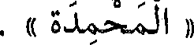
« المحمدة » .
File: 000294.gt.txt (if the image is defective, simply delete all Arabic text and the line will be excluded)
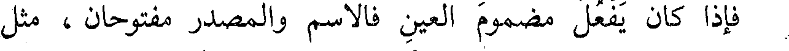
فإذا كان يفعل مضموم العين فالاسم والمصدر مفتوحان ، مثل
File: 000295.gt.txt (if the image is defective, simply delete all Arabic text and the line will be excluded)
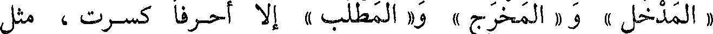
« المدخل » و« المخرج » و« المطلب » إلا أحرفا كسرت ، مثل
File: 000296.gt.txt (if the image is defective, simply delete all Arabic text and the line will be excluded)
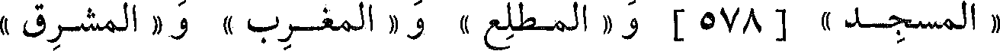
« المسجد » [578] و« المطلع » و« المغرب » و« المشرق »
File: 000297.gt.txt (if the image is defective, simply delete all Arabic text and the line will be excluded)
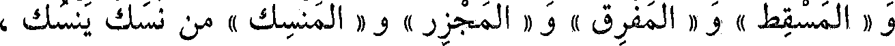
و « المسقط » و « المفرق » و « المجزر » و « المنسك » من نسك ينسك ،
File: 000298.gt.txt (if the image is defective, simply delete all Arabic text and the line will be excluded)
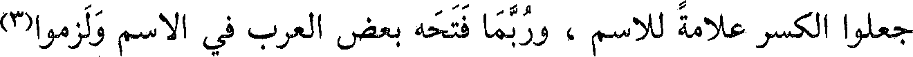
جعلوا الكسر علامة للاسم ، وربما فتحه بعض العرب في الاسم ولزموا(3)
File: 000299.gt.txt (if the image is defective, simply delete all Arabic text and the line will be excluded)
القياس .
To Save: `Ctrl+s`, make sure to choose `Webpage, complete`!